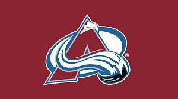

The Avalanche were originally the Quebec Nordiques, according to the Colorado Encyclopedia. They began in the World Hockey Association (WHA) in 1972 and joined the NHL in 1979.
They relocated to Denver, Colorado in 1995 and were renamed the Colorado Avalanche. Other names considered for the team included "Extreme", "Blizzards", and "Black Bears". The team shares its home arena, Ball Arena, with the NBA's Denver Nuggets.
In their inaugural season in Denver (1995-1996), the Avalanche won the Stanley Cup, sweeping the Florida Panthers in four games. They are the only NHL team to have won the Stanley Cup in their first season after relocating. The Avalanche have won three Stanley Cups in franchise history: 1996, 2001, and 2022. They are the only active NHL team to have won all of their appearances in the Stanley Cup Final.
The Avalanche won nine consecutive division titles from 1995 to 2003, setting an NHL record. The team holds the NHL record for the longest consecutive attendance sell-out streak at home games, with 487 games. This streak began in November 1995 and ended in October 2006. The Avalanche have had twelve players inducted into the Hockey Hall of Fame. Joe Sakic, a franchise legend, holds several team records, including games played (1,378), career goals (625), career assists (1,016), and career points (1,641).
Go To Denver Broncos Page Go To Denver Nuggets Page